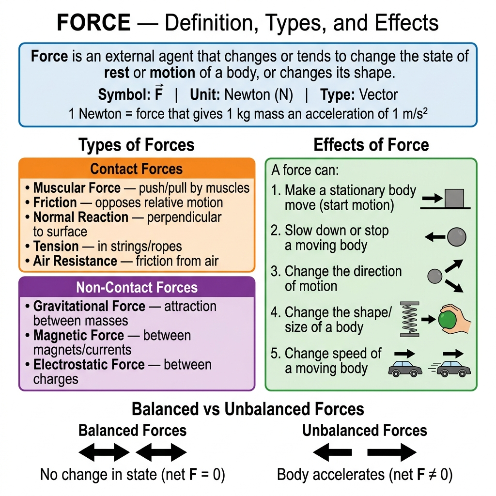
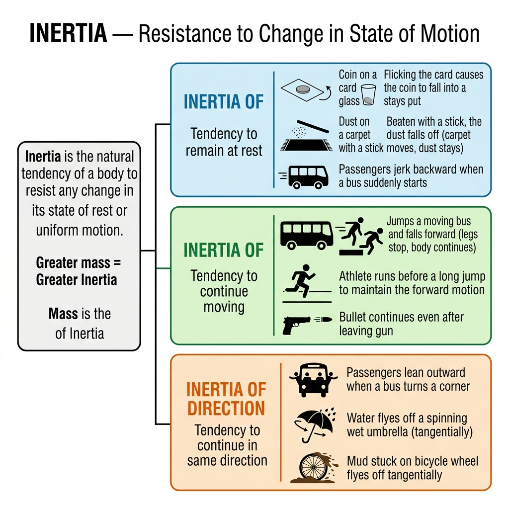
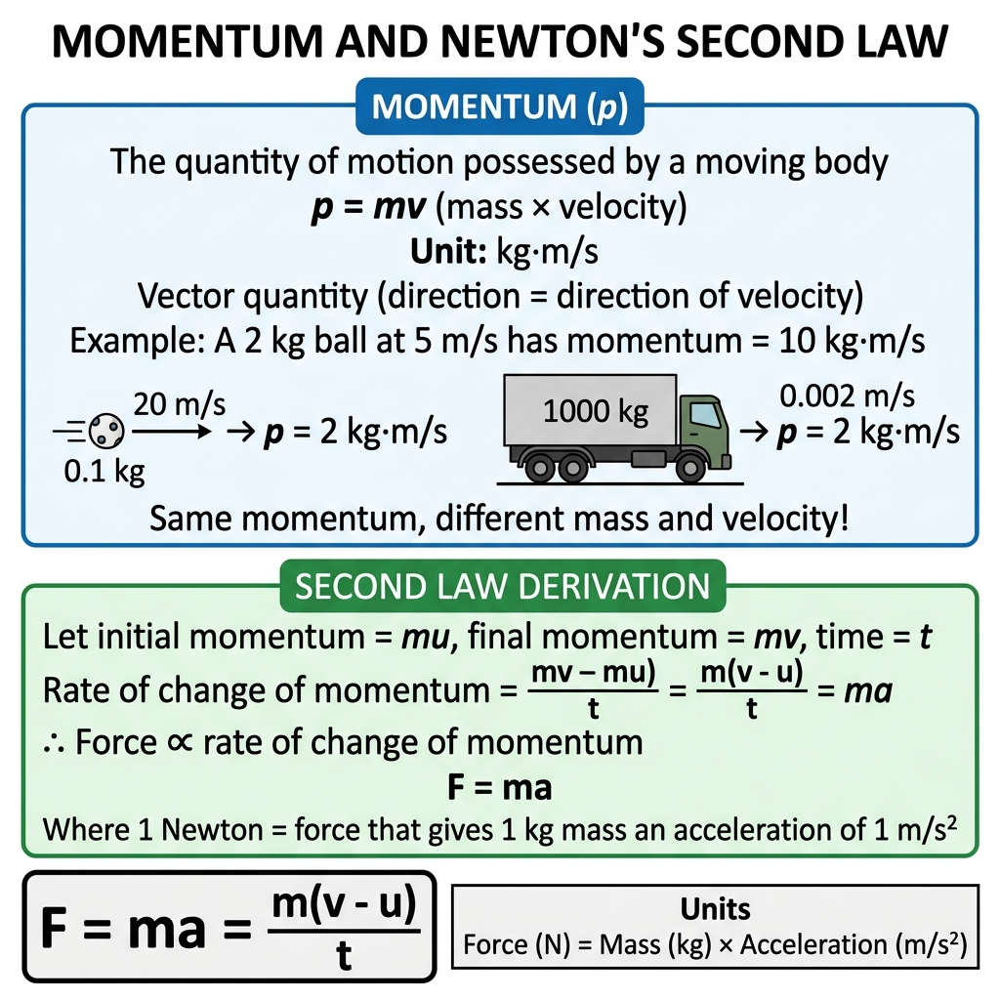
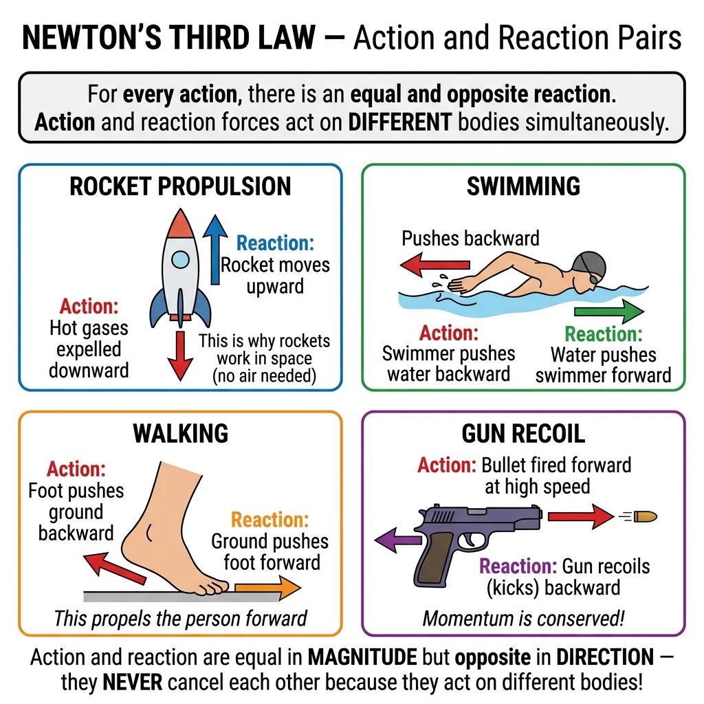
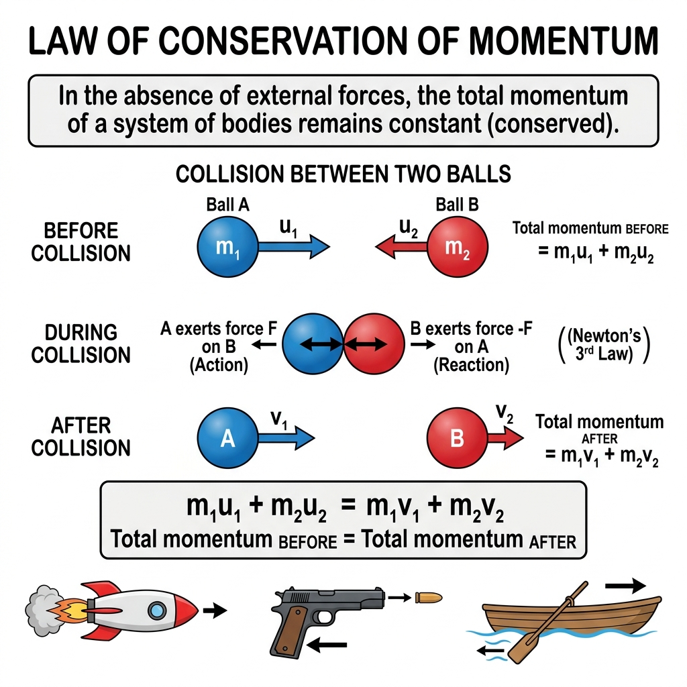
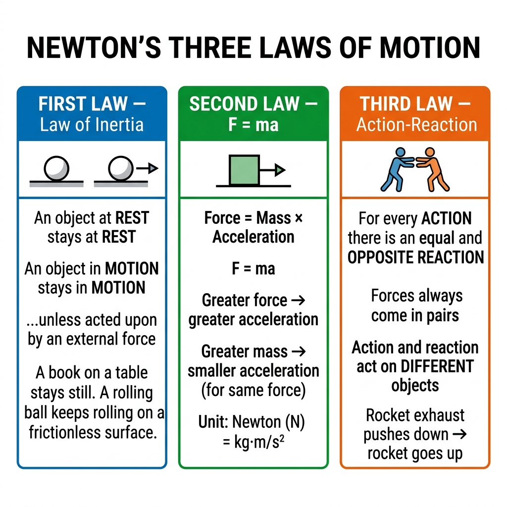

Vardaan Learning Institute
ICSE Class 9 Physics • Comprehensive Chapter Notes
🌐 vardaanlearning.com📞 9508841336
Chapter 3: Laws of Motion
Reference: S. Chand Concise Physics (R.K. Bansal) • NCERT Class 9 • Selina Concise Physics • ICSE Board Exam
1. Force — Definition, Types & Effects
Definition
A Force is an external agent (push or pull) that changes or tends to change the state of rest or uniform motion of a body, or changes its shape/size.
Symbol: F | SI Unit: Newton (N) | Type: Vector quantity
1 Newton is defined as the force that produces an acceleration of 1 m/s² in a body of mass 1 kg.
$$1 \text{ N} = 1 \text{ kg} \cdot \text{m/s}^2$$

Fig. 3.1 — Types of Forces (Contact vs Non-Contact) and Effects of Force on a body. Balanced forces produce no change; unbalanced forces produce acceleration.
Effects of Force
A force can produce the following effects on a body:
- Make a stationary body move — e.g., kicking a football at rest
- Stop or slow down a moving body — e.g., brakes on a bicycle
- Change the speed of a moving body — e.g., accelerating a car
- Change the direction of motion — e.g., a cricket ball hit by a bat
- Change the shape or size of a body — e.g., squeezing a rubber ball
Types of Forces
| Type | Sub-type | Description | Example |
|---|
Contact Forces
(bodies touch) | Muscular Force | Force exerted by muscles | Lifting a bag, pushing a wall |
| Friction | Opposes relative motion between surfaces | Braking, walking |
| Normal Reaction | Perpendicular to surface of contact | Table supporting a book |
| Tension | Force in stretched strings/ropes/chains | Rope in tug-of-war |
| Air Resistance | Friction due to air | Parachute slowing down |
Non-Contact Forces
(at a distance) | Gravitational Force | Attraction between masses | Earth attracting a ball |
| Magnetic Force | Between magnets or magnetic materials | Iron filings attracted to magnet |
| Electrostatic Force | Between electrically charged bodies | Comb attracting paper bits |
2. Balanced and Unbalanced Forces
Balanced Forces
When two or more forces acting on a body have a zero resultant (net force = 0), they are called balanced forces.
Effect: No change in the state of rest or motion. The body remains stationary or continues moving at the same speed in the same direction.
Example: A book lying on a table — weight acts downward, normal reaction acts upward; both are equal and opposite. Net force = 0. Book stays at rest.
Unbalanced Forces
When the net force on a body is not zero, the forces are unbalanced.
Effect: The body accelerates in the direction of the net force.
Example: A car engine providing 1000 N forward but friction of only 400 N backward. Net force = 600 N forward → car accelerates.
Key Distinction
Balanced forces → No acceleration (body in equilibrium)
Unbalanced forces → Acceleration in direction of net force
This is the very foundation of Newton's Laws!
3. Newton's First Law of Motion — Law of Inertia
Statement Board Definition
"A body continues in its state of rest or of uniform motion in a straight line unless acted upon by an external unbalanced force."
Understanding the First Law
The First Law tells us two important things:
- A stationary body will remain stationary unless a net external force acts on it.
- A body moving in a straight line at constant speed will continue to do so forever, unless a net external force changes its state.
What is Inertia?
Inertia is the natural tendency of a body to resist any change in its state of rest or uniform motion.
Think of it as the "stubbornness" of matter — it refuses to change what it's doing!
Galileo's Contribution: Galileo was the first to observe that a moving body tends to keep moving on a smooth (frictionless) horizontal surface. Newton formalized this into his First Law.
Inertia and Mass
Greater mass = Greater Inertia
It is harder to start, stop, or change the direction of a more massive object.
This is why it is harder to push a loaded truck than an empty bicycle.
Mass is the quantitative measure of Inertia.
4. Types of Inertia & Examples

Fig. 3.2 — Three types of Inertia (Rest, Motion, Direction) with real-life examples from daily experience.
| Type | Definition | Daily Life Examples |
|---|
| Inertia of Rest |
Tendency of a body to remain at rest — to resist the start of motion. |
• A coin on a card falls into glass when card is flicked (coin stays put)
• Dust falls off a carpet when beaten (dust stays, carpet moves)
• Passenger jerks backward when bus suddenly starts
• Seeds fall off a tree when branch is shaken
|
| Inertia of Motion |
Tendency of a body to continue its uniform motion — to resist stopping or slowing down. |
• A person jumping from a moving bus falls forward (body continues forward, legs stop)
• A bullet continues even after leaving the gun
• An athlete runs before a long jump to use forward inertia
• A ball rolling on a smooth surface keeps rolling
|
| Inertia of Direction |
Tendency of a body to continue moving in the same direction — to resist change of direction. |
• Passengers lean outward on a turning bus (body resists change of direction)
• Water flies off tangentially from a spinning wet umbrella
• Mud from bicycle wheel flies off at a tangent
• Sparks fly tangentially from a grinding wheel
|
Solved Example ICSE
Q: Why does a passenger sitting in a stationary bus jerk backward when the bus suddenly starts?
Ans: When the bus starts suddenly, the lower body of the passenger (in contact with the seat) starts moving forward with the bus. But the upper body, due to inertia of rest, tends to remain at rest. This difference in motion between the upper and lower body makes the passenger appear to jerk backward relative to the bus.
Solved Example ICSE
Q: Why does a passenger in a bus jerk forward when the bus suddenly stops?
Ans: When the bus stops suddenly, the seat and lower body come to rest with the bus. But the upper body, due to inertia of motion, tends to continue moving forward. Hence the passenger jerks forward.
5. Momentum

Fig. 3.3 — Momentum (p = mv) and derivation of Newton's Second Law from rate of change of momentum.
Definition
Momentum is the product of the mass and velocity of a body. It is the quantity of motion possessed by a moving body.
$$\vec{p} = m\vec{v}$$
SI Unit: kg·m/s (or N·s) | Type: Vector (direction = direction of velocity)
Dimension: [MLT⁻¹]
Key Points about Momentum
- A stationary body has zero momentum (since v = 0).
- Two bodies can have the same momentum even if their masses and velocities are different.
- A large truck moving slowly can have the same momentum as a small bullet moving fast.
- The direction of momentum is always the same as the direction of velocity.
Momentum Examples
A heavy truck (mass = 5000 kg) at 2 m/s: $p = 5000 \times 2 = 10000$ kg·m/s
A cricket ball (mass = 0.16 kg) at 40 m/s: $p = 0.16 \times 40 = 6.4$ kg·m/s
A bullet (mass = 0.02 kg) at 400 m/s: $p = 0.02 \times 400 = 8$ kg·m/s
Notice: The truck has much more momentum than the bullet, even though the bullet moves faster!
Solved Example Numerical
Q: A car of mass 1200 kg is moving at 72 km/h. Calculate its momentum.
Given: m = 1200 kg, v = 72 km/h = 72 × (5/18) = 20 m/s
Momentum: p = mv = 1200 × 20 = 24,000 kg·m/s
6. Newton's Second Law of Motion
Statement Board Definition
"The rate of change of momentum of a body is directly proportional to the applied force, and the change in momentum takes place in the direction of the applied force."
$$F \propto \frac{\Delta p}{\Delta t} \implies F = \frac{dp}{dt} = ma$$
Derivation of F = ma
Let a body of mass $m$ have initial velocity $u$ and final velocity $v$ after time $t$ under force $F$.
Step 1: Initial momentum = $p_1 = mu$
Step 2: Final momentum = $p_2 = mv$
Step 3: Change in momentum = $\Delta p = p_2 - p_1 = mv - mu = m(v-u)$
Step 4: Rate of change of momentum = $\dfrac{\Delta p}{t} = \dfrac{m(v-u)}{t} = ma$
Step 5: By Second Law: $F \propto \dfrac{\Delta p}{t}$, so $F = k \cdot ma$. Taking $k = 1$ (defines the unit of force): $\boxed{F = ma}$
$$F = ma = \frac{m(v-u)}{t} = \frac{\Delta p}{t}$$
Unit: 1 Newton (N) = 1 kg × 1 m/s² = 1 kg·m/s²
Important Conclusions from the Second Law
- For a given mass: greater force → greater acceleration ($a \propto F$)
- For a given force: greater mass → smaller acceleration ($a \propto 1/m$)
- The direction of acceleration is always the same as the direction of the net force.
- When $F = 0$, $a = 0$ → body moves at constant velocity (First Law is a special case of the Second Law)
Relationship Between Laws
The First Law is actually a special case of the Second Law!
When $F = 0$: $F = ma \Rightarrow 0 = ma \Rightarrow a = 0$ (velocity doesn't change)
→ body stays at rest (if it was at rest) or continues at constant velocity (if it was moving) ✓
Solved Example 1 Numerical ICSE
Q: A force of 500 N acts on a body of mass 25 kg initially at rest. Find: (a) acceleration, (b) velocity after 4 s, (c) distance in 4 s.
(a) $a = F/m = 500/25 = $ 20 m/s²
(b) $v = u + at = 0 + 20(4) = $ 80 m/s
(c) $s = ut + \frac{1}{2}at^2 = 0 + \frac{1}{2}(20)(16) = $ 160 m
Solved Example 2 Numerical
Q: A car of mass 1000 kg moving at 20 m/s is brought to rest in 5 s. Find the retarding force.
$a = (v-u)/t = (0-20)/5 = -4$ m/s² (retardation = 4 m/s²)
$F = ma = 1000 \times (-4) = $ −4000 N (magnitude = 4000 N, opposing motion)
Solved Example 3 — Change in Momentum Type ICSE
Q: A ball of mass 0.5 kg is moving at 10 m/s. A force acts on it for 0.1 s and its velocity becomes 15 m/s. Find the force.
$F = \dfrac{m(v-u)}{t} = \dfrac{0.5 \times (15-10)}{0.1} = \dfrac{0.5 \times 5}{0.1} = \dfrac{2.5}{0.1} = $ 25 N
7. Impulse
Definition
Impulse is the product of force and the time for which it acts. It equals the change in momentum of the body.
$$\text{Impulse} = F \times t = \Delta p = m(v - u)$$
SI Unit: N·s or kg·m/s | Type: Vector
Why is Impulse Important?
In many real situations, a large force acts for a very short time (like a bat hitting a cricket ball). We cannot easily measure the force or the time separately, but we can easily measure the change in momentum (= impulse).
Applications of Impulse
Decreasing effect of force (increasing time → reducing force):
- A cricketer moves hands backward while catching a ball — increases time of impact → reduces force on hands (same impulse, longer time)
- Crumple zones in cars absorb collision over longer time → reduce force on passengers
- A high-jumper lands on a cushion — extends stopping time → reduces impact force
- Packaging foam/bubble wrap — increases time of impact → protects fragile items
Increasing effect of force (decreasing time → increasing force):
- A karate chop — very short contact time → very large force
- Hammering a nail — short impact time → large penetrating force
Solved Example Numerical
Q: A cricket ball of mass 0.15 kg is moving at 30 m/s. A batsman hits it and it moves in the opposite direction at 20 m/s. If the time of contact is 0.02 s, find the force exerted.
Taking initial direction as positive: $u = +30$ m/s, $v = -20$ m/s
$\Delta p = m(v-u) = 0.15 \times (-20-30) = 0.15 \times (-50) = -7.5$ N·s
$F = \Delta p / t = -7.5 / 0.02 = $ −375 N (magnitude = 375 N, direction opposite to initial motion)
8. Newton's Third Law of Motion
Statement Board Definition
"For every action, there is an equal and opposite reaction. The action and reaction forces act on different bodies simultaneously."
$$\vec{F}_{A \text{ on } B} = -\vec{F}_{B \text{ on } A}$$

Fig. 3.4 — Action-Reaction pairs in four real-life situations: rocket propulsion, swimming, walking, and gun recoil.
Key Points about the Third Law
- Action and reaction are always equal in magnitude but opposite in direction.
- They act on different bodies — action on body A, reaction on body B. This is why they do NOT cancel each other!
- Both action and reaction forces occur simultaneously — one does not cause the other in a time sequence.
- It is impossible to have a single isolated force — forces always exist in pairs.
⚠️ Common Misconception
"If action and reaction are equal and opposite, they should cancel each other and nothing should move!"
Wrong! Action and reaction act on different bodies. A force can only be cancelled by another force acting on the same body. Since these forces are on separate bodies, they produce separate accelerations on each body (according to F = ma for each).
Real-Life Examples of Third Law
| Situation | Action | Reaction |
|---|
| Walking | Foot pushes ground backward | Ground pushes foot forward → person moves forward |
| Swimming | Swimmer pushes water backward with arms | Water pushes swimmer forward |
| Rocket / Jet | Engine expels hot gases backward at high speed | Gases push rocket forward (reaction propulsion) |
| Gun & Bullet | Gun propels bullet forward | Bullet pushes gun backward (recoil) |
| Rowing a boat | Oar pushes water backward | Water pushes boat forward |
| Ball hitting wall | Ball exerts force on wall | Wall exerts equal force back on ball (ball bounces) |
Solved Example ICSE
Q: A gun of mass 3 kg fires a bullet of mass 30 g at 300 m/s. Find the recoil velocity of the gun.
Using conservation of momentum (both at rest initially, so total initial momentum = 0):
$0 = m_{\text{bullet}} \times v_{\text{bullet}} + m_{\text{gun}} \times v_{\text{gun}}$
$0 = 0.030 \times 300 + 3 \times v_{\text{gun}}$
$v_{\text{gun}} = -9/3 = $ −3 m/s (3 m/s backward = recoil)
9. Law of Conservation of Momentum
Statement Board Definition
"In the absence of an external unbalanced force, the total momentum of a system of bodies remains constant (is conserved)."
$$m_1u_1 + m_2u_2 = m_1v_1 + m_2v_2$$

Fig. 3.5 — Collision between two objects: Total momentum before collision = Total momentum after collision. The law arises from Newton's Third Law.
Derivation from Newton's Third Law
Consider two bodies A (mass $m_1$) and B (mass $m_2$) colliding. During collision:
Step 1: By Newton's 3rd Law: $F_{A \text{ on } B} = -F_{B \text{ on } A}$
Step 2: By Newton's 2nd Law, force = rate of change of momentum:
$\dfrac{m_2(v_2-u_2)}{t} = -\dfrac{m_1(v_1-u_1)}{t}$
Step 3: Multiply both sides by $t$:
$m_2v_2 - m_2u_2 = -(m_1v_1 - m_1u_1)$
Step 4: Rearrange:
$m_1u_1 + m_2u_2 = m_1v_1 + m_2v_2$ ✓
Applications
- Rocket Propulsion: Rocket and exhaust gas start from rest (p = 0). Gas ejected backward at high speed → rocket moves forward. Momentum conserved at zero total.
- Gun Recoil: Bullet goes forward, gun recoils backward. Total momentum stays zero.
- Explosion of a bomb: All fragments fly outward such that total momentum of all pieces = initial momentum (zero if bomb was at rest).
- Collisions in sports: Billiard balls, football tackles — momentum is transferred between objects.
Solved Example 1 — Collision Numerical ICSE
Q: A 2 kg ball moving at 5 m/s collides with a 3 kg ball at rest. If they move together after collision, find the common velocity.
Before: $p_i = m_1u_1 + m_2u_2 = 2 \times 5 + 3 \times 0 = 10$ kg·m/s
After (move together): $p_f = (m_1+m_2)v = 5v$
By conservation: $5v = 10 \implies v = $ 2 m/s
Solved Example 2 — Rocket Type Numerical ICSE
Q: A rifle of mass 4 kg fires a bullet of mass 50 g at 200 m/s. Find the recoil velocity of the rifle.
Before firing, both at rest: total momentum = 0
After: $0 = m_b v_b + m_r v_r$
$0 = 0.05 \times 200 + 4 \times v_r$
$v_r = -10/4 = $ −2.5 m/s (recoil at 2.5 m/s backward)
Solved Example 3 — Explosion Numerical
Q: A bomb of mass 10 kg explodes into two pieces of 4 kg and 6 kg. The 4 kg piece moves at 15 m/s. Find the velocity of the 6 kg piece.
Before explosion (at rest): total momentum = 0
$0 = 4 \times 15 + 6 \times v$
$v = -60/6 = $ −10 m/s (10 m/s in opposite direction)
10. Applications & Real-Life Examples

Fig. 3.6 — Overview of all three Newton's Laws with everyday applications. Understanding these laws explains most mechanical phenomena around us.
Everyday Explanations Using Laws of Motion
| Observation | Explanation (Which Law?) |
|---|
| A passenger jerks backward when bus starts suddenly | First Law — Inertia of rest of the upper body |
| A passenger lurches forward when bus brakes | First Law — Inertia of motion of the body |
| Seatbelts save lives in accidents | First Law — Prevents body from continuing forward in a crash |
| A heavier truck needs more force to accelerate than a car | Second Law — F = ma, greater mass needs greater force |
| A cricketer pulls hand back while catching | Impulse — Increases time, reduces force (less pain) |
| Rockets travel in space (no air to push against) | Third Law — Exhaust gas action, rocket reaction |
| Recoil of gun when fired | Third Law + Conservation of Momentum |
| Why does walking work? | Third Law — Push ground back, ground pushes you forward |
Numerical Method — Step by Step
🎯 Algorithm for Numericals
- Read carefully and identify given data: masses, velocities, forces, time
- Convert all units to SI (kg, m/s, s, N)
- Identify which law or formula applies
- Apply the formula and solve step by step
- Check direction (use + for one direction, − for opposite)
- Write the answer with correct units and direction
11. Formula Quick Reference
| Quantity | Formula | Unit | Type |
|---|
| Momentum | $p = mv$ | kg·m/s | Vector |
| Newton's 2nd Law | $F = ma = \dfrac{m(v-u)}{t} = \dfrac{\Delta p}{t}$ | N (Newton) | Vector |
| Impulse | $J = F \times t = \Delta p = m(v-u)$ | N·s or kg·m/s | Vector |
| Conservation of Momentum | $m_1u_1 + m_2u_2 = m_1v_1 + m_2v_2$ | kg·m/s | — |
| Weight | $W = mg$ | N | Vector (downward) |
| Newton's 1st Law | If $F_{net} = 0 \Rightarrow a = 0$, velocity = constant | — | — |
| Newton's 3rd Law | $F_{AB} = -F_{BA}$ | N | — |
12. Practice Problems
Q1 — Conceptual ICSE
Q: Give one example each of (a) inertia of rest, (b) inertia of motion, (c) inertia of direction. Explain each.
(a) Inertia of rest: A coin on a card falls into a glass when the card is flicked. The coin stays in place (at rest) due to inertia while the card moves away.
(b) Inertia of motion: A passenger in a bus falls forward when the bus stops suddenly. The passenger's body continues moving forward due to inertia of motion.
(c) Inertia of direction: Mud on a bicycle wheel flies off tangentially, not radially. This is because the mud has inertia to continue in a straight line (tangent to the circular path).
Q2 — Numerical Numerical ICSE
Q: A force of 200 N acts on a 10 kg object for 5 s. If the object starts from rest, find: (a) acceleration, (b) final velocity, (c) momentum at the end.
(a) $a = F/m = 200/10 = $ 20 m/s²
(b) $v = u + at = 0 + 20 \times 5 = $ 100 m/s
(c) $p = mv = 10 \times 100 = $ 1000 kg·m/s
Q3 — Momentum Numerical
Q: A body of mass 5 kg has its momentum changed from 20 kg·m/s to 50 kg·m/s in 6 s. Find the force applied.
$F = \dfrac{\Delta p}{t} = \dfrac{50 - 20}{6} = \dfrac{30}{6} = $ 5 N
Q4 — Conservation (Collision) Numerical ICSE
Q: A 5 kg trolley moving at 4 m/s collides with a stationary 3 kg trolley. If they stick together, find the velocity after collision.
$p_i = 5 \times 4 + 3 \times 0 = 20$ kg·m/s
$p_f = (5+3)v = 8v$
$8v = 20 \Rightarrow v = $ 2.5 m/s
Q5 — Impulse Numerical
Q: A 0.2 kg ball is dropped from a height. Just before hitting the ground, its velocity is 10 m/s. After bouncing, its velocity is 6 m/s upward. If time of contact is 0.05 s, find: (a) change in momentum, (b) average force.
Taking downward as positive: $u = +10$ m/s, $v = -6$ m/s
(a) $\Delta p = m(v-u) = 0.2(-6-10) = 0.2 \times (-16) = $ −3.2 N·s (upward impulse)
(b) $F = |\Delta p|/t = 3.2/0.05 = $ 64 N (upward, exerted by floor on ball)
Q6 — Third Law Application ICSE
Q: Explain how a rocket moves in space using Newton's Third Law.
In a rocket, fuel is burned and the resulting hot gases are expelled backward through the nozzle at very high velocity. This is the action force (gases pushed backward by the rocket).
By Newton's Third Law, the gases exert an equal and opposite reaction force on the rocket in the forward direction. This pushes the rocket forward.
This is called reaction propulsion and works in the vacuum of space because it does not depend on air — the rocket pushes the exhaust, and the exhaust pushes the rocket.
Q7 — Mixed Numerics Numerical
Q: Two balls of masses 3 kg and 5 kg are moving toward each other at 4 m/s and 2 m/s respectively. After collision, the 3 kg ball rebounds at 2 m/s. Find the velocity of the 5 kg ball.
Let right = positive. Ball 1 (3 kg): $u_1 = +4$ m/s, $v_1 = -2$ m/s. Ball 2 (5 kg): $u_2 = -2$ m/s.
Conservation: $m_1u_1 + m_2u_2 = m_1v_1 + m_2v_2$
$3(4) + 5(-2) = 3(-2) + 5v_2$
$12 - 10 = -6 + 5v_2$
$2 + 6 = 5v_2 \Rightarrow v_2 = 8/5 = $ 1.6 m/s (in positive/right direction)
⚠️ Common Mistakes in Exams
- Saying action and reaction "cancel each other" — they act on different bodies, so they do NOT cancel.
- Forgetting to convert units — always convert km/h to m/s, g to kg, etc.
- Using wrong sign for velocity direction — always define + and − directions first.
- Confusing mass (kg) with weight (N) — Weight = mg.
- Using $p = mv$ without noting that both are vectors — direction matters.
- Not applying conservation of momentum to both objects — track ALL bodies in the system.
- Thinking that more mass = always more momentum — momentum depends on BOTH mass AND velocity.
🎯 ICSE Exam Strategy
- 4–5 mark questions: Derivation of F = ma from Second Law, Derivation of Conservation of Momentum — must be written step-by-step clearly
- 2 mark definitions: All three Newton's Laws must be stated precisely in standard board language
- Numericals: Always write Given, To Find, Formula, Calculation, Answer with units
- Everyday examples: Practice explaining bus jerks, rocket propulsion, gun recoil, swimming — very common in ICSE
- High-value topics: Conservation of Momentum collisions (both stick together + bounce back types) are extremely frequent